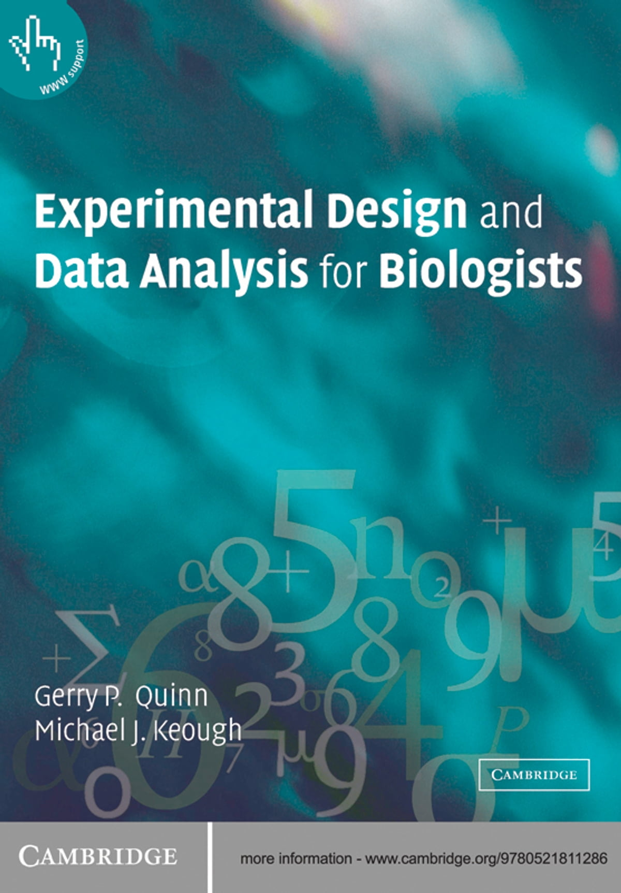
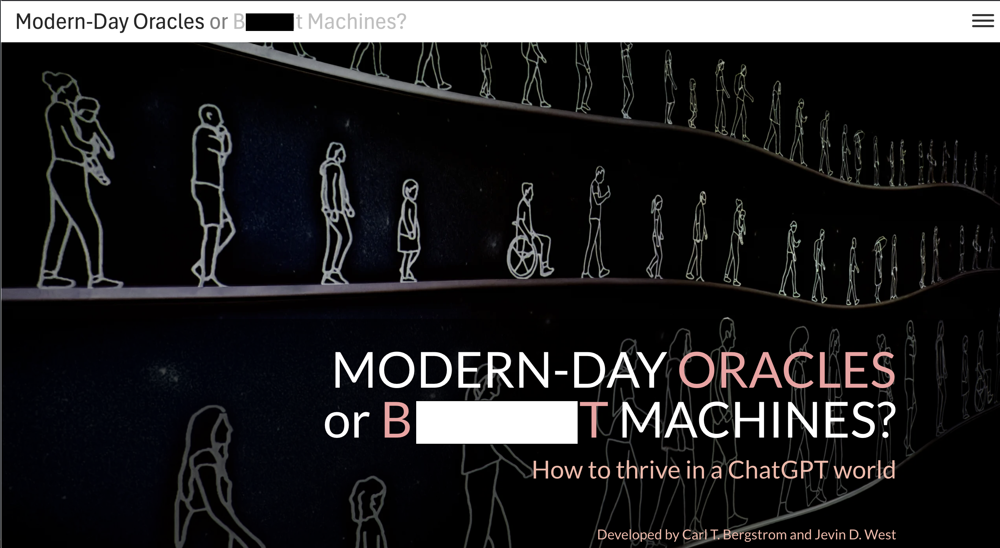

LECTURE 0: course overview
Logistics
Lecture: Monday, Wednesday, Friday 1:15-2:10, 1-304
Lab: Monday or Tuesday or Friday 2:55-5:35, 4-419
Credits: 3
Instructors
Dr. Clark Rushing
clark.rushing@uga.edu
Office: 3-409
Office hours: M 1:00-2:30
TAs
Alan Bond (M)
alan.bond1@uga.edu
Office: 1-102
Office hours: Th 10:00am-12:00pm
Emily Card (Tu)
ec76834@uga.edu
Office: 3-402
Office hours: W 11:00am-1:00pm
Hannah Wright (F)
Hannah.Wright1@uga.edu
Office: 3-402
Office hours: Tu 9:30-11:30 or by appointment
Course schedule and materials
Lectures and labs: rushinglab.github.io/FANR67501
Primary texts (not required)
Fieberg, J. (2022). Statistics for Ecologists - A Frequentist and Bayesian Treatment of Modern Regression Models. An open-source online textbook.
Quinn, G.P. & Keough, M.J. 2002. Experimental Design and Data Analysis for Biologists. Cambridge University Press.

Lecture slides
All slides are shared as HTML presentations via the course website.
See these instructions for details about:
Navigating
Footnotes (hover and end)
Presentation notes
Printing
Labs
Meet weekly
You should have registered for one and only one lab section
Always attend your assigned lab section unless both TA’s have provided prior approval to attend the other section
Taught in R
No prior experience required
But those without prior experience may need to spend time learning outside of class
You can use your own laptop but make sure you have R and RStudio installed prior the first lab 2
Lab assignments
8 throughout semester
Meant to help with
- Understanding lecture/lab concepts
- Implementing statistical procedures in R
- Interpreting and presenting results
Worth 10 points each
- Grade based on turning in complete assignment on time
- Answer keys will be posted after all assignments have been submitted
Grading
200 points total
. . .
3 lecture exams, 40 points (20%) each
- In-class format using eLC/Lockdown Browser 3
- Primarily focused on concepts, not coding
- Pool of 8-10 potential questions provided in advance
- Exam consists of 2 questions chosen by me, 2 questions chosen by student
- Not (explicitly) cumulative
- See schedule for approximate dates (subject to change)
. . .
- 8 lab assignments, 10 points (5%) each
Note on ai
AI tools (e.g., ChatGPT) have advanced very rapidly in a very short time
. . .
- AI can increasingly help answer questions about statistical concepts, coding, etc.
. . .
AI = resource (similar to Google, Cross Validated, etc.)
- AI can help you perform statistical analyses but it cannot replace your own statistical knowledge
. . .
My goal is not to fight AI, but instead focus on responsible and appropriate use
Students may use AI to assist with lab assignments but must acknowledge, document, and assess all AI use
Students may use AI to assist with exam preparation but must complete exams without the use of AI
Unacknowledged use of AI will be considered a violation of course policy. Suspected violations will be referred to the Office of Academic Honesty
Note on ai
Later in the semester, we will have a class discussion on the role of AI in research/statistical analysis
. . .
In preparation for that discussion, I highly recommend reading Bull$&!t Machines, a short, self-paced course on the LLM

Remote students
Although we do our best to make instruction and materials accessible to remote students, this is not officially a hybrid class. That has several implications
Teaching to in-person and remote students is hard, especially labs. Technology problems are inevitable
Remote students should be prepared to spend extra effort engaging with course materials
Remote students must arrange to take exams with a proctor present and exam arrangements must be approved by the instructor prior to the exam
MAKE SURE YOU HAVE ACCESS TO THE PRIMARY eLC PAGE!
. . .
A note to in-person students:
In my experience, lab and lecture attendance are strong predictors of performance. Although zoom links can be used for brief or unanticipated absences, students based in Athens should attend classes in person
Course objectives
. . .
To understand:
. . .
- The logical structure of experiments, including the design of manipulative and observational experiments
. . .
- The logic of statistical inference, including causation, from manipulative and observational experiments
. . .
- The analysis of such experiments, focusing on linear models
. . .
- The use and interpretation of models in ecological studies
Basic structure
Foundational concepts for statistical inference
Linear model basics
Null hypothesis significance testing
Experimental design and causal inference
Linear model variations for experiments (t-tests, ANOVA, ANCOVA)
Generalized linear models and model selection
Pre- and post-course assessment
Two short quizzes used to assess collective learning outcomes
Posted under
Quizzeson eLCRequire Lockdown Browser extension
Pre-assessment available until 8/24/2026
. . .
The assessments do not count towards your grade, but students who complete them will receive extra credit on their final grade
2 points for completing pre-assessment
2 points for completing post-assessment
1 points for completing both assessments (5 points total)
Looking ahead
Next time: Basic Concepts in Statistics
Reading: Quinn chp. 1